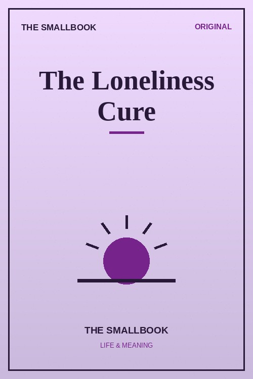

Library › Life & Meaning
The Loneliness Cure - Summary & Key Lessons

A TSB Original on building a connected life in a disconnected age.
📖 OPEN THE FULL INTERACTIVE BREAKDOWN →🌐 Read it in Hindi, Hinglish, Gujarati, Tamil & 22 more languages, with audio.
💡 The Big Idea
Surgeons general now call loneliness an epidemic with the mortality signature of smoking. This TSB Original is a practical cure manual: it distinguishes solitude from loneliness, maps the three circles of connection, weak ties, close friends, and belonging, and gives a twelve week protocol of small, repeatable doses: recurring rooms, micro obligations, hosted rituals and repaired relationships. Its central claim: connection is a practice with a dosage, not a personality trait some were issued at birth.
🧠 The 8 Key Lessons
Lesson 1: The Diagnosis: Three Hungers, Not One
One: What Loneliness Actually Is
The cure starts by splitting the complaint. Intimate hunger wants one person who knows everything; relational hunger wants a circle that would notice your empty chair; collective hunger wants a tribe, a team, a congregation, a we. Different hungers, different medicines, and much loneliness persists because people dose the wrong one, seeking a soulmate to cure what a weekly team would fix, or collecting acquaintances while the intimate chair stands empty. The chapter gives a self audit that takes four minutes and changes the treatment plan entirely.
📖 Example: A recently retired surgeon, surrounded by colleagues at conferences, scored himself and found the collective chair full and the intimate chair empty since his divorce. He had been prescribing himself more events. The audit redirected a year of effort into two friendships, and the conferences became pleasant again. Read the full example →
⚡ Do this: Run the three chairs audit tonight: intimate, relational, collective, scored one to ten. Prescribe for the emptiest chair only.
Lesson 2: Weak Ties Are Load Bearing
Two: The Mycelium Layer
Research on wellbeing keeps embarrassing our intuitions: the barista who knows your order, the neighbour with the dog, the fellow commuter, measurably protect mood and health, and their loss, in moves and lockdowns, is felt as grief. This chapter teaches weak tie gardening: names learned, greetings upgraded to micro conversations, routes and hours made regular so the same faces can recur. It is the cheapest layer of connection to build and the fastest to pay out.
📖 Example: A woman who moved cities for work built no friendships for months and felt herself thinning. Her prescription was pure mycelium: same cafe, same run club, same market stall, greetings by name within a month. The deep friendships arrived later, introduced, as they usually are, by the shallow layer. Read the full example →
⚡ Do this: Choose three recurring places this week and become a regular: same time, names learned, one real sentence beyond the transaction.
Lesson 3: Recurring Rooms Beat Memorable Events
Three: The Architecture of Belonging
Belonging research converges on an unglamorous formula: the same people, at the same time, doing the same thing, with low stakes and no RSVP theatre. Choirs, leagues, congregations, volunteer shifts and standing breakfasts outperform spectacular gatherings because repetition converts strangers into witnesses of your life. This chapter helps the reader join, or found, one recurring room, with scripts for the awkward first three attendances, which are the price of admission everyone pays and nobody mentions.
📖 Example: A widower dragged to a Thursday morning men's breakfast by a neighbour nearly quit twice. By week six the table knew his order, his late wife's name and his opinions about the cricket. He now describes the breakfast, accurately, as the structure holding his week above water. Read the full example →
⚡ Do this: Book one recurring room this week and attend three times before judging it. Put all three dates in the calendar now.
Lesson 4: Being Needed Is the Deepest Medicine
Four: Roles, Not Audiences
Loneliness persists in rooms where we are audiences and dissolves in rooms where we have a role: the one who brings the keys, keeps the score, teaches the new volunteer. The chapter argues that contribution is connection's strongest form because it manufactures the experience at loneliness's exact opposite pole: your absence would be noticed and would matter. Readers are guided to acquire one small, real responsibility in a group they already like, and to let obligation do the socialising their courage cannot.
📖 Example: A shy software engineer joined a community kitchen as a dishwasher and was promoted, against her protests, to soup. The role gave her forty names, a reason to return on the weeks motivation failed, and the first birthday party invitation of her adult life in that city. The soup, she insists, was incidental. Read the full example →
⚡ Do this: Acquire one small role this month in a group you attend: keys, scores, setup, treasury. Let being needed introduce you.
Lesson 5: Repair and Reach: The Two Hardest Doses
Five: Old Wounds, New Invitations
The protocol ends where most loneliness actually lives: the drifted friendship awaiting one message, the sibling silence awaiting one call, and the invitations we wait to receive instead of extending. The chapter supplies the exact texts, short, warm, free of the guilt invoice, and the host's playbook for a first small gathering that cannot fail: six people, one pot, ninety minutes, a question on the table. It closes with the maintenance dose: connection, like fitness, is rented weekly, and the rent is lower than the loneliness it replaces.
📖 Example: Two friends who had drifted for six years resumed over one message that the book dictates almost verbatim: no occasion, no apology essay, just a memory and a coffee date. Both later said they had each waited for the other. The six year gap cost one text message to close, which is the book's whole argument in one embarrassment. Read the full example →
⚡ Do this: Send the drifted-friend message today: one memory, one invitation, no invoice. Then put one six person gathering in the calendar within thirty days.
Lesson 6: Design Your Week Like a Village
The Cure
Villages never required their members to schedule friendship; the well, the market and the festival carried it. Urban life abolished the carriers and billed individuals for the loss as a personality flaw. The cure's design move is to rebuild carriers at personal scale: the same cafe at the same hour, the recurring game, the standing walk, the class that meets weekly for years. Loneliness is usually a logistics problem wearing a diagnosis, and logistics is mercifully fixable without first becoming a different person.
📖 Example: The programme's members who recovered fastest did not attend the most events; they attended the same event forty times. By week ten the regulars' table had absorbed them, which is the village mechanism working exactly as designed, at the scale of one cafe and a calendar that repeats. Read the full example →
⚡ Do this: Choose one recurring room and attend it four weeks running before judging it. Villages are built by repetition, not by reviewing venues.
Lesson 7: The Friendship Budget: What Connection Actually Costs
The Cure
Research on friendship formation puts a price on intimacy: roughly fifty hours to move from acquaintance to friend, ninety to something closer, usually accumulated without anyone counting. Modern loneliness is partly an accounting illusion, hours scattered across dozens of pleasant contacts that never compound into anyone. The cure suggests concentration: fewer rooms, more hours, names learned, follow ups sent. Depth is a budget decision before it is a chemistry event, and the budget is the one thing fully in your control.
📖 Example: Members asked to log their social hours discovered the pattern immediately: eleven people at three hours each, nobody at fifty. The ones who reallocated rather than added, same total hours, one table, reported the shift within two months, which suggests the loneliness was a portfolio problem all along. Read the full example →
⚡ Do this: Audit last month's social hours by person. Move five hours toward one promising acquaintance this month and watch the category change.
Lesson 8: Being the Host Is the Shortcut Nobody Wants
The Cure
The loneliest people wait to be invited; the connected ones issue invitations and absorb the small humiliations of organising, the unanswered messages, the four who said maybe. Hosting is the cure's least popular prescription and its most reliable, because it reverses the applicant position entirely. A standing small table, soup on Thursdays, a walk that leaves at seven regardless, converts you from candidate to convener, and convener is the role every village protects. The rejections sting for a week; the table feeds you for years.
📖 Example: The programme's founding story is a widow who started a Thursday soup with four chairs and a rule that nobody had to earn their seat twice. Three years on it has a waiting list, which she finds hilarious, having begun it, in her words, because nobody was going to invite her first. Read the full example →
⚡ Do this: Issue one concrete invitation this week with a date and a table. Repeat it monthly at the same time. Conveners are made by calendars, not charisma.
✅ 5-Step Action Plan
- Run the three chairs audit; dose the emptiest chair first.
- Become a regular in three places this week; learn names.
- Join one recurring room; attend three times before judging.
- Acquire one small role in a group this month.
- Send the drifted-friend message today.
- Host six people, one pot, ninety minutes, within thirty days.
- Review chairs quarterly; connection is rented weekly.
⚠️ When This Doesn't Work
A TSB Original synthesising public health research and social practice. Loneliness entangled with depression, trauma or illness deserves professional company too; this book is an ally of that help, not a replacement.
💀 The Graveyard Proves It
💬 Best Quotes from The Loneliness Cure
- “You do not need more people. You need a place where your absence is noticed.”
- “Belonging is built by being expected.”
- “Weak ties are not weak. They are the mycelium of a life.”
Interactive version: mark lessons as read, listen in your language, share quote cards.